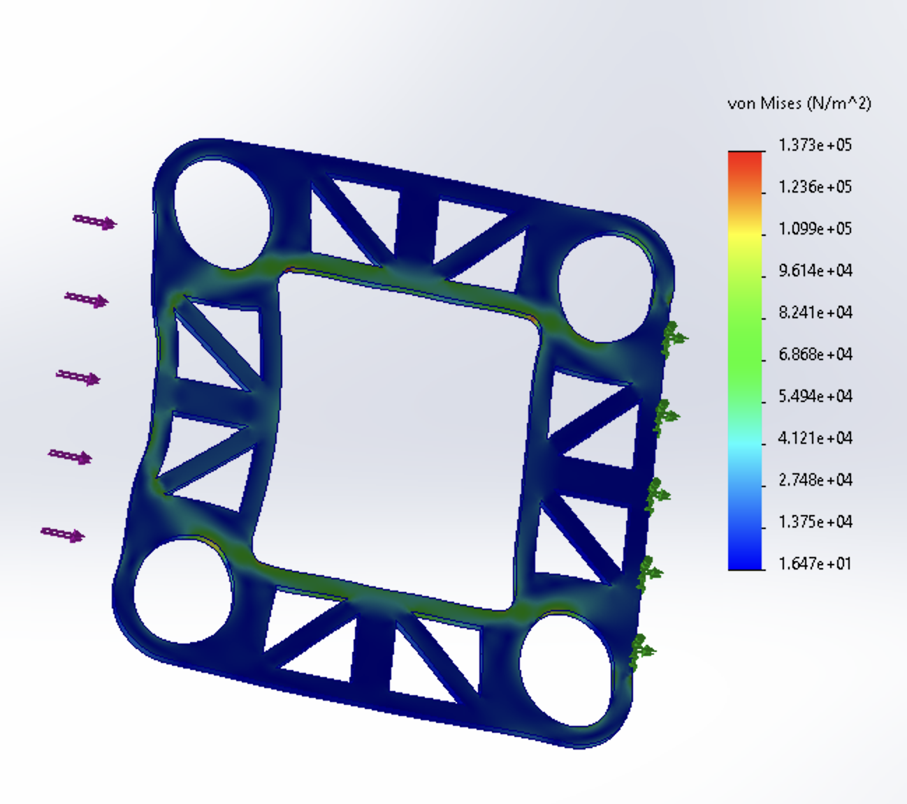
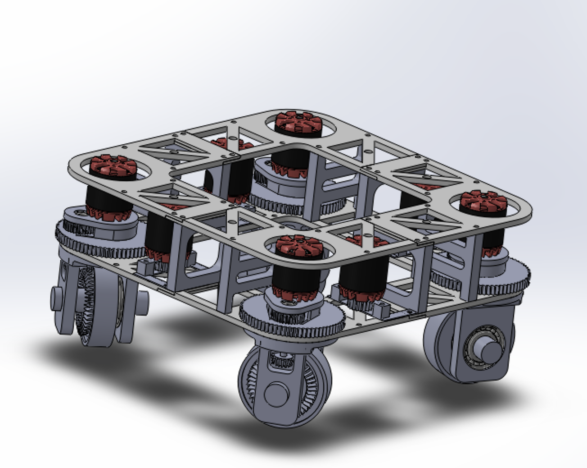

Design Phase
CAD & Structural Analysis

Frame CAD Design
The swerve module frame was designed in SolidWorks around a custom drivetrain architecture incorporating bevel gears, spur gears, and belt drives to achieve a 5.07 m/s no-load speed. The design prioritizes stiffness, modularity, and compact packaging while preserving accessibility for future mechanical upgrades.

Finite Element Analysis
FEA was used to validate load paths and ensure the frame could withstand operational forces. SolidWorks Simulation identified major structural issues early, while higher-accuracy simulations in ANSYS evaluated precise stress distributions and impact loading during crash scenarios.
Completed Frame Assembly
The final frame integrates all modules with optimized stiffness and minimal weight. Design supports future upgrades and ensures protection of electronics during collisions or high-load maneuvers.



Implementation
Hardware & Software Integration

Electronics & Control
Designed modular control electronics in KiCad, including motor drivers, sensors, and microcontrollers. Wiring layout supports easy upgrades and ensures reliability for high-speed omnidirectional motion.

ROS2 Control Architecture
Implemented high-level control on a Raspberry Pi using ROS2, handling motion profiling, swerve kinematics, and subsystem communication. Low-level motor control ran on ESP32 to achieve stable omnidirectional motion at speeds up to 5 m/s.
Integrated System
Final assembly combines all electronics, ROS2 software, and frame modules into a compact, high-speed, and robust swerve-drive platform ready for testing and further development.


Key Specifications
5.07 m/s
Max Speed (No-Load)
ROS2
Control Framework
Modular
Architecture Design